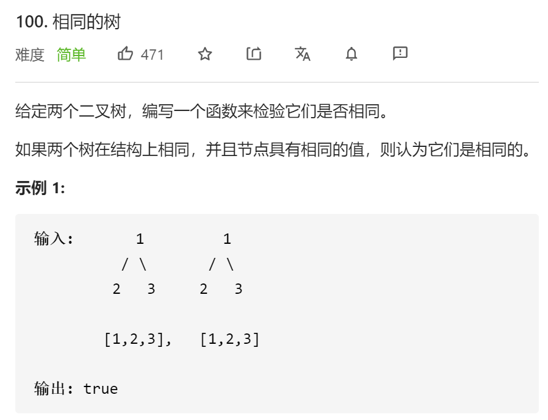
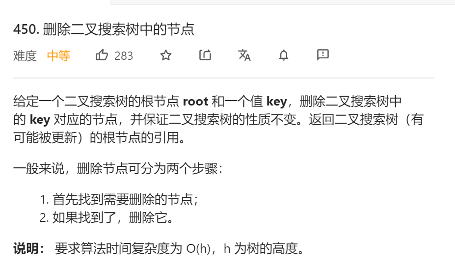

TreeviewCopyright © aleen42 all right reserved, powered by aleen42
二叉搜索树
二叉搜索树
二叉搜索树(Binary Search Tree，简称BST)是一种很常用的二叉树。它定义
一个二叉树中，任意节点的值要大于等于左子树所有节点的值，且要小于等于右
边子树的所有节点的值。
void traverse(TreeNode root) {
// root 需要做什么？在这做。
// 其他的不用 root 操心，抛给框架
traverse(root.left);
traverse(root.right);
}
public class TreeNode {
public int val;
public TreeNode left;
public TreeNode right;
public TreeNode() {
}
public TreeNode(int x) {
val = x;
}
public TreeNode(int val, TreeNode left, TreeNode right) {
this.val = val;
this.left = left;
this.right = right;
}
}
验证
public boolean isValidBST(TreeNode root) {
return isValidBST(root, null, null);
}
Boolean isValidBST(TreeNode root, TreeNode min, TreeNode max) {
if (root == null) {
return true;
}
if (min != null && root.val <= min.val) {
return false;
}
if (max != null && root.val >= max.val) {
return false;
}
return isValidBST(root.left, min, root) && isValidBST(root.right, root, max);
}
相同的树

public boolean isSameTree(TreeNode p, TreeNode q) {
if (p == null && q == null) {
return true;
}
if (p == null || q == null) {
return false;
}
if (p.val != q.val) {
return false;
}
return isSameTree(p.left, q.left) && isSameTree(p.right, q.right);
}
搜索
public TreeNode searchBST(TreeNode root, int val) {
if (root == null) {
return null;
}
if (root.val == val) {
return root;
} else if (root.val < val) {
root = searchBST(root.right, val);
} else if (root.val > val) {
root = searchBST(root.left, val);
}
return root;
}
删除

public TreeNode deleteNode(TreeNode root, int key) {
if (root == null) {
return null;
}
if (root.val == key) {
if (root.left == null) {
return root.right;
}
if (root.right == null) {
return root.left;
}
TreeNode minNode = getMinNode(root.right);
root.val = minNode.val;
root.right = deleteNode(root.right, minNode.val);
} else if (root.val > key) {
root.left = deleteNode(root.left, key);
} else if (root.val < key) {
root.right = deleteNode(root.right, key);
}
return root;
}
private TreeNode getMinNode(TreeNode node) {
while (node.left != null) {
node = node.left;
}
return node;
}
插入
public TreeNode insertIntoBST(TreeNode root, int val) {
if (root == null) {
return new TreeNode(val);
}
if (root.val < val) {
root.right = insertIntoBST(root.right, val);
}
if (root.val > val) {
root.left = insertIntoBST(root.left, val);
}
return root;
}
{kind=link}
{kind=link}
{kind=link}
{kind=link}
{kind=link}